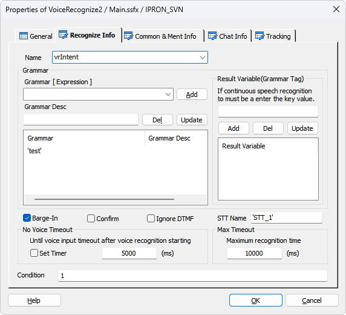
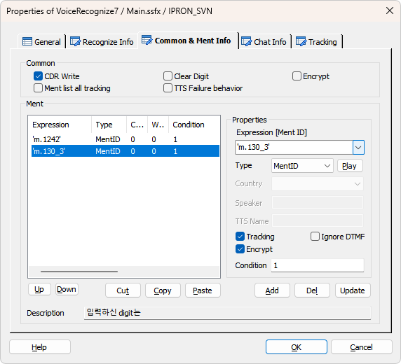
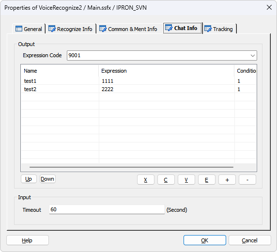
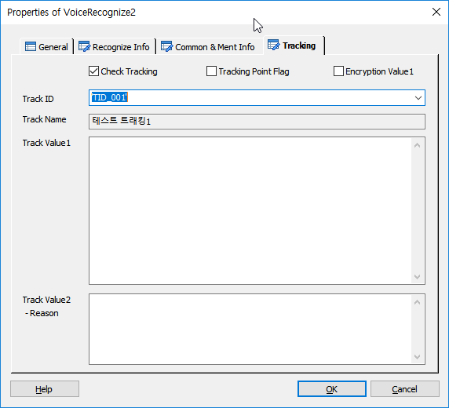

음성인식을 하기위한 아이템으로 음성인식과 DTMF 입력을 동시에 처리 가능하며, Barge-In 처리 유무를 선택 가능 합니다.
음성인식은 독립어 인식과 연속어 인식을 지원 하며, 음성인식 서버와는 MRCP 연동을 통하여 처리 합니다.
ForCus는 Nuance 음성인식 엔진 및 보이스웨어, 셀바스 등의 음성인식 엔진을 지원합니다.
Notes:
MRCP(Media Resource Control Protocol) : ASR 및 TTS 서버의 리소스를 제어하기 위한 표준 프로토콜.
MCM(MRCP Control Module) : NSS 와 MCE 사이에서 음성인식 요청을 처리하는 모듈
NSS(Nuance Speech Server) : 뉘앙스 음성인식 서버
MCE(Media Control Engine, 구 명칭 TE(Trunk Engine)) : 미디어 처리 엔진
ICON
PROPERTIES
 Recognize Info
Recognize Info

Name : 아이템 이름을 지정 합니다.(음성인식 결과변수에 접근 할 때 사용 합니다)
Grammar
· 음성인식을 하기 위한 그래머 및 연속어 인식의 경우 결과 변수를 지정 합니다.
Grammar [ Expression ] : 음성인식 그래머를 지정 합니다. 그래머는 문자형으로 입력 할 경우 여러개의 그래머를 리스트에 지정 가능합니다. 변수형으로 지정할 경우는 하나만 가능 합니다. 대신 변수에 여러 개의 그래머를 구분자 "|" 를 가지고 미리 지정 가능 합니다. 단, 문자형과 변수형은 리스트에 같이 넣을 수 없습니다.(변수에 여러개 의 그래머 지정 시 예 : 'file:test1.grxml | file:test2.grxml | file:test3.grxml')
♣ 그래머 타입에 따른 그래머 입력 방법
file - Nuance Engine 이 설치된 장비내에 위치하는 Grammar
builtin - 설치된 언어팩에 내장된 Grammar(각 언어팩에 첨부된 레퍼런스 참조. 한글팩의 경우 Supplement - Korean ko-KR.pdf 참조)
mcmfile - MCM이 설치된 장비에 위치하는 Grammar(비권장)
사용 시에는 그래머 앞에 사용하고 ":"으로 구분한다.
사용 예 : 'file:testGram.grxml', 'builtin:grammar/currency?language=ko-KR', 'mcmfile:testGram.grxml'
Grammar Desc : 지정한 그래머의 설명을 입력 합니다.
Add Button : 지정한 그래머를 그래머 리스트에 추가 합니다.(문자형으로 지정시 여러 개, 변수형으로 지정시 한개 만 지정 가능)
Del Button : 선택한 그래머를 삭제 합니다.
Update Button : 선택한 그래머의 내용을 갱신 합니다.
Result Variable(Grammar Tag)
· 연속어 인식의 경우 그래머에 지정한 연속어 입력의 결과 태그의 값을 지정 합니다. 지정된 값은 연속어 인식의 결과 변수로 사용 됩니다. 그래머에 설정한 개수 만큼 입력 해야 하며, 연속어 인식이 있는데 지정 하지 않으면 음성 인식결과에서 오류가 발생 합니다.
Add Button : 지정한 값을 결과변수 리스트에 추가 합니다.(변수로 지정 되므로 문자형이 아닌 변수형으로 입력 합니다. 문자형으로 입력 해도 변수형으로 변환되어 추가 됩니다)
Del Button : 선택한 결과변수를 삭제 합니다.
Update Button : 선택한 결과변수를 갱신 합니다.
Barge-In Check Box : 음성인식 시 Barge-In 을 할 것인지 유무를 지정 합니다.
Barge-In 체크 시 Ment List에 멘트가 있을 경우 <Play 태그 보다 앞에 <voicerecognizestart 태그를 생성하여 VR엔진을 시작한 후에 멘트를 Play하여 Play중 발성에 대해서 인식할 수 있게 한다.
Confirm Check Box : 음성인식 결과에 대한 사용자 질의를 음성인식으로 할때 체크 합니다. 예를 들면 "브리지텍" 이라는 음성인식 결과에 대해 "브리지텍이 맞습니까? 예 아니오로 대답해 주세요" 라고 음성인식을 할때 사용하며, 이 음성인식의 결과인 "예, 아니오" 에 따라서 "브리지텍"이라고 음성인식을 한 결과의 VR_REJECT 라는 항목의 갱신 자료로 사용 됩니다.(데이터의 갱신은 VERIFY Item을 사용 합니다.)
Ignore DTMF Check Box : 음성인식 시에 디지트 입력을 무시하여 디지트에 의해 음성인식이 중단되는 것을 막습니다.(v6.0 이상)
STT Name : 등록된 STT Name 입력으로 Multi STT 를 지원합니다.(SWAT>IVR관리>미디어관리>STT 관리)(v6.0 이상)
No Voice Timeout
Set Timer Check Box : Set Timer 체크가 되면 음성인식 서버가 시작(voicerecognizestart 태그) 된 후 바로 타이머가 동작하며 체크되지 않으면 음성인식 처리 태그인 voicerecognizeresult 태그 에서 타이머 체크가 시작됩니다.
· Timeout(ms)은 음성이 입력 되기 까지의 타입아웃을 지정 합니다.
- 타임아웃 시간을 지정 하지 않으면 서버 기본 타임아웃이 적용 됩니다.(milisecond 단위)
Max Timeout
· 음성인식 서버가 음성인식을 시작 한 후 인식의 결과가 나오기 까지의 최대 시간을 지정 합니다.(milisecond 단위이며, 기본 값은 10초 입니다)
Condition : 아이템 수행 조건을 지정 합니다.
 Common & Ment Info
Common & Ment Info

Common
· 음성인식 공통 속성입니다.
CDR Write Check Box : 음성인식 결과 또는 입력된 디지트를 CDR에 기록 여부를 체크 합니다.
Clear Digit Check Box : 멘트 리스트를 재생하기 전에 디지트 버퍼를 지울지 여부를 체크 합니다.
Encrypt Check Box : 음성인식 결과 또는 입력된 디지트를 CDR에 기록 할 때 암호화 합니다.
Ment list all tracking Check Box : 멘트 리스트에 지정된 전체 멘트를 대상으로 트래킹을 처리합니다.(개별 멘트 트래킹보다 우선합니다.)
TTS Failure Behavior : 멘트 리스트에서 첫 번째 항목 멘트 타입이 "TTS Stream" 또는 "TTS File" 일 경우 체크 되었을 때 유효하며, 첫 번째 멘트인 TTS Play에서 TTS 서버와 연동이 실패인 경우 첫 번째 멘트 이후 설정된 멘트는(TTS Stream, TTS File 포함 모든 타입) 첫 번째 멘트인 TTS Play의 대체 멘트로 처리 됩니다.
Ment
Expression [Ment ID] : 재생할 음성 파일을 지정합니다.
- DefineMent Item에 정의된 MentID가 콤보박스 리스트로 제공되며 리스트에서 멘트를 선택 할 수 있습니다.
- 멘트 파일 이름이나 MentID가 들어있는 변수를 사용 할 수 있습니다.
- 가변 멘트를 처리 할 수 있습니다. 가변 멘트는 여러개의 멘트를 한번에 재생 합니다. 멘트는 작은 따옴표로 묶고 멘트와 멘트 사이는 콤마로 구분 합니다.( 예 : 'Ment1','Ment2','Ment3' )
- 연산식을 통해 멘트 이름을 조합 할 수 있습니다. 단, 변수와 문자를 같이 연산 할 수는 없습니다.( 예 : gs_TrData.BI09ZZ.from.O_27_합계금액 * 1 )
- 멘트 리스트에 여러개의 멘트를 등록하여 순서대로 재생 할 수 있습니다.
Type : 재생 할 멘트의 타입을 설정 합니다.(MentID, File 타입을 제외한 모든 타입은 Country항목의 영향을 받아서 각 언어별로 멘트를 재생 합니다)
Play Button : 멘트 리스트에서 선택한 멘트가 MentID로 설정 되었다면 재생 합니다.(Tools>Options>Debug>Ment Path 설정 필요, 단, 가변멘트일 경우 현재는 재생 불가)
Stop Button : 현재 재생 중인 멘트를 중지 합니다.
Country : 국가별 언어를 설정하여 해당 타입으로 멘트를 재생할 경우 각 언어에 맞게 멘트를 재생 합니다.
- MentID, File 타입을 제외한 모든 타입 선택시 Country항목이 활성화 됩니다.
- 현재 지원하는 언어는 한국어, 영어, 중국어, 베트남어, 몽골어를 지원 합니다.
Speaker : Ment Type이 TTS-Stream, TTS-File인 경우 TTS Speaker ID(숫자)를 설정합니다.(Speaker ID는 TTS 매뉴얼 참조)
TTS Name : Ment Type이 TTS-Stream, TTS-File이면 TTS Name 을 설정하여 TTS 서버를 선택할 수 있습니다.
- 값을 지정하지 않으면 기본 TTS 서버로 처리 됩니다.
- v5.x : 'ADT' 로 지정하면 TTS Adapter 를 통한 TTS 연동을 지원합니다.(Multi TTS 지원 불가)
- v6.0 이상 : "SWAT>IVR관리>미디어관리>TTS 관리" 에 등록한 Name 을 지정하면 TTS Adapter 를 통한 Multi TTS 연동을 지원합니다.
Tracking Check Box : 멘트별로 트래킹을 처리합니다.
Ignore DTMF Check Box : 멘트 재생 중에 DTMF 입력을 무시 할지를 설정 합니다.
Encrypt Check Box : 멘트별로 내용을 암호화 하여 AI 시나리오일 경우 Dialogue CDR에 적용하며 Tracking이 함께 체크된 경우 시나리오 타입에 관계없이 Tracking CDR에도 적용합니다.(v6.2 이상)
Condition : 각 멘트의 재생 조건을 설정 합니다.
Up Button : 선택한 멘트를 위로 이동 합니다..
Down Button : 선택한 멘트를 아래로 이동 합니다.
Cut Button : 선택한 리스트를 잘라냅니다.(Ctrl+X)
Copy Button : 선택한 리스트의 내용을 복사 합니다.(Ctrl+C)
Paste Button : 복사한 리스트의 내용을 붙여넣기 합니다.(Ctrl+V)
Add Button : 지정한 멘트를 멘트 리스트에 추가 합니다.
Del Button : 선택한 멘트를 멘트 리스트에서 삭제 합니다.
Update Button : 선택한 멘트의 내용을 갱신 합니다.
Description : Expression 에 지정된 멘트의 설명이 있다면 표시 합니다.
 Chat Info
Chat Info
* ForCus v6.0 이상 지원

※ Chat 지원 시나리오 설정을 했을 때 Chat Info 탭이 활성화 됩니다.
Sentence Category : Chat Info는 Show Chat 시 문장과 함께 Chat 서버로 전송되는데 문장 카테고리별로 설정이 가능합니다.
Expression Code : Chat Text 로 표현하지 못하는 이미지나 아이콘 등을 미리 정의한 코드입니다.
※ 리스트에 입력된 test1, test2는 Expression Code 9001 의 상세 코드입니다.
※ Chat 콜 일때 Chat Text 출력은 Common & Ment Info 탭 > Ment Expression 에 입력된 MentID 의 Description 또는 TTS 인 경우 합성 문자열이 출력 됩니다.
Timeout : Get Chat 타임아웃을 설정합니다.(기본 60초)
※ Chat 콜 일때 Chat Text 인입은 음성인식 결과 태그를 이용하기 하기 때문에 음성인식과 같은 변수를 사용합니다.(@name.vrresult)
 Tracking
Tracking

트래킹을 처리합니다.
Check Tracking Check Box : Tracking을 사용 할 것인지를 체크합니다.
Tracking Point Flag Check Box : 특별한 Tracking Flag를 설정하여 SWAT에서 트래킹 시에 이 플래그가 설정된 항목만 트래킹 할 수 있습니다.
Encryption Value1 Check Box : Track Value1 속성 데이터에 대해서 암호화 처리를 합니다.
Track ID : 정의한 Track ID를 선택합니다.
- DefineTrack Item에 정의된 Track ID가 콤보박스 리스트로 제공됩니다.(Type이 없거나, VoiceRecognize인 경우)
Track Name : Track ID를 선택하면 같이 정의된 이름을 출력합니다.(SWAT에서 이 이름으로 트랙킹 시에 사용합니다.)
Track Value1 : 트래킹 시에 사용할 값을 입력 합니다.
Track Value2 :트래킹 시에 사용할 값을 입력 합니다.(결과에 대한 Reason값)
RESULT
· 처리 결과 세션 변수
session.command.result : 처리 성공(_SLEE_SUCCESS_), 실패(_SLEE_FAILED_)
session.command.reason : 실패면 실패 오류코드(시스템 상수 참조)
· 아이템 속성 변수(@name 은 Name 항목에서 지정한 이름)
@name.term_digit : 결과가 DTMF 입력인 경우 사용자가 입력한 입력 종료 키
@name.vrtype : 결과 타입 문자( DTMF : "dtmf", 독립어 : "sr", 연속어 : "nsr"), 이 타입으로 결과가 음성인식 인지 DTMF 입력인지를 판단 합니다.
@name.vrresult : 단일어 음성인식 결과 문자(또는 Chat 일 때 입력된 Text(v6.0 이상) )
@name.vrspeech : 음성인식 발성 문자열(v5.1 이상)
@name.vrrate : 음성인식 결과 신뢰도 퍼센트
@name.confirm : 결과 Confirm Mode : ALWAYS, IF_NECESSARY, NEVER
@name.결과변수 : 연속어 인식의 경우 인식한 결과가 여러개 이므로 지정한 결과 변수로 결과를 제공 합니다. 결과변수는 Recognize Info 탭의 Grammar 그룹 Result Variable(Grammar Tag) 그룹에 지정한 값 입니다.(결과 변수 사용 예 : @name.bank, @name.menu)
@name.mrcpid : MRCP 프로토콜을 사용하는 음성인식의 경우 사용한 MRCP ID
RELATED